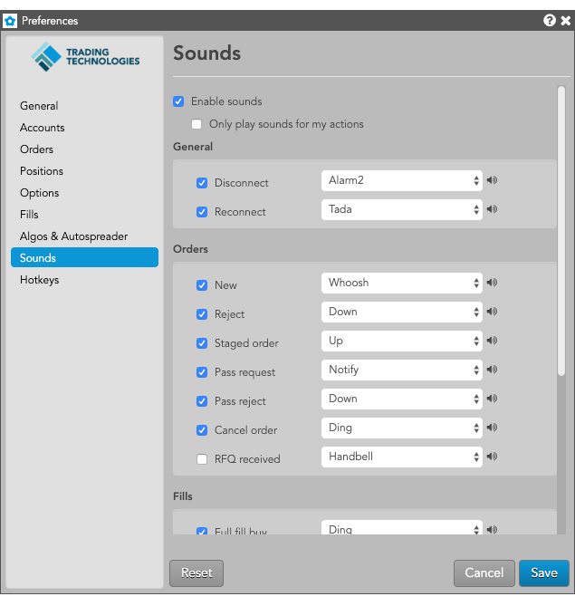

| Preference | Description |
|---|---|
| Disconnect | Sets a sound alert when the TT Platform connection is lost. |
| Reconnect | Sets a sound alert when the TT Platform connection is restored. |
| Preference | Description |
|---|---|
| New | Sets a sound alert when a new order is entered, either manually or by an automated tool like Autospreader. |
| Reject | Sets a sound alert when an order is rejected. |
| Staged Order | Sets a sound alert when a staged order is submitted. |
| Pass request | Sets a sound alert when you send an order passing request. |
| Pass reject | Sets a sound alert when you reject an order passing request. |
| Cancel order | Sets a sound alert when an order is canceled. |
| RFQ received | Sets a sound alert when an RFQ is received. |
| Preference | Description |
|---|---|
| Full Fill Buy | Sets a sound alert when a Buy order is fully filled. |
| Full Fill Sell | Sets a sound alert when a Sell order is fully filled. |
| Partial Fill Buy | Sets a sound alert when a Buy order is partially filled. |
| Partial Fill Sell | Sets a sound alert when a Sell order is partially filled. |
| Conflate partial fills (ms) | Sets whether to hold partial fill sounds per order for a configured time interval in milliseconds. When enabled, partial fill sounds are held until the interval expires or the order is fully filled. If the order is fully filled within the interval, no partial fill sound is played. |
| Consider child order full fill as partial fill | Sets a sound alert when a TT Order Type parent order is partially filled by a fully filled child order. Enabled by default. When this setting and Partial Fill Buy/Sell sounds are enabled, a partial sound plays instead of the full fill sound when the child order is fully filled. When this setting is enabled and only Full Fill Buy/Sell sounds are enabled, then sounds for child order fills will not play. In this instance, only the full fill sound plays when the parent is fully filled. |
| Preference | Description |
|---|---|
| Failed algo | Sets a sound alert when an algo fails. |
To add and use your own custom sound files:
Note: Sound files must be in the MP3 format (file extension .mp3).
The file is uploaded to your workspace and can be selected in each sound preference (e.g., Orders, Fills, etc.). To remove the file, click .